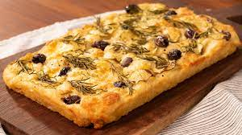

Menu
Focaccia
Ingredientes
- • 3 xic (360g) de trigo.
- • 1 xíc. (240ml) de água.
- • 1/4 xíc. (50ml) de azeite
- • 1/2 colher de sopa (5g) de fermento biológico
- • 1 colher de sopa (10g) de açúcar
- • 1 colher de sopa (10g) de sal
- • Azeitonas, tomates e temperos (opcional).
Preparo
- 1. Em uma tigela, misturar a água, o fermen- to e o açúcar e reservar por 5 minutos
- 2. Adicionar o azeite, a farinha e o sal e misturar.
- 3. Deixar descansar por 30 min. ou mais.
- 4. Sovar a massa ate ficar lisinha.
- 5. Colocar a massa numa forma untada e deixar descansando por mais 30 min.
- 6. Fazer uma emulsão com água, sale azeite e despejar em cima da massa descansada, fazen- do furinhos com os
dedos...
- 7. Decorar com ervas ou verduras (opcional)
- 8. Levar ao forno (250°C) por aprox. 25 min.ou até douvar..
